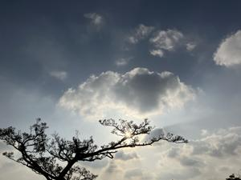
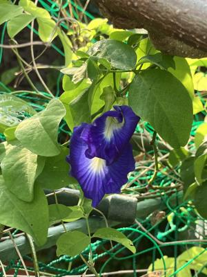
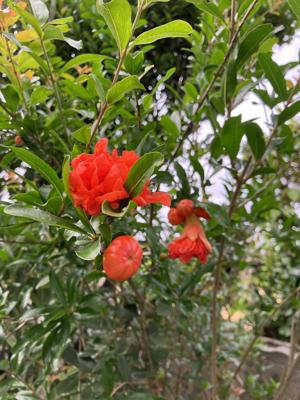

うるがいの話 ある日
最新: Disaster【うるがいの話 ある日】とは 一日だけのプログです
『うるがいの話』の最新一日だけのプログで、通信料が少なく経済的だ。カニの画像をクリックすると全ての日付が載る『うるがいの話』サイトを表示します
|
|
【うるがいの話】 うるがい(ｳﾙｶﾞｲ urugai)とは、『もずくがに』の名前でとても大きくなります。 |
|---|---|
|
|
【カミマヤーの話】 猫のことを方言でマヤーといいます。カミマヤー（kamimayaa）とは、神の猫のことです。 |
|
【たながぁの音楽】 たながぁ（ﾀﾅｶﾞｰ tanagaa）とは手長えびのことで、何種類かあり大きいのは車 エビぐらいになります。 |

|
【ぶながぁの話】 ぶながぁ(ﾌﾞﾅｶﾞｰ bunagaa)とは、赤い髪の毛、赤い身体、そして身長は１ｍ２０ｃｍ ぐらい、川の蟹を食べているの目撃された。場所は沖縄県国頭郡大宜味村のと ある村僕の隣近所に住んでいる爺さんから、聞いた話です。 |
|
|
【ギーマの話】 ギーマ(giima)とは、山原の里山に咲くスズランに似た、 花を付けます。実は食べられます、 気が付くと口の周りが紫になっています。 |
2026年04月21日 (火）Disaster
15:22

『訓練ではありません、サーバーが障害です・・・・・・・・』
朝８時前に、全社員へメールを出しました。その後、９時前に
役員室で理事長が、災害時の事業継続計画を宣言、部長級の管
理職が、配下の組織へ通達。１０時過ぎには、復旧したかと。
もう、２０年近く前のこと記憶も不正確です。
金融庁からの指摘で事業継続計画を作るハメになり、実際に適
用したのは一度だけでした。それまでDisasterという単語は知
りませんでした。
ヨメの従妹が、今度青森にいらしてくださいとこの前言ったの
で、青森県へでも旅行にいくべと考えていたやさきです。怖い
ので当面行けません。
ヨメの友達は、２０２４年の能登半島地震の時、青森へ旅行へ
行き小松空港から、帰る予定でしたが地震で大変だったと言っ
ていた。
気象庁は「北海道・三陸沖後発地震注意情報」を発表しました。
今後、大規模な地震が起きる可能性が相対的に高まっています。
本当に、災害が起きたらヤバいす。
裏庭にあるバタフライピー、今年はじめての花

柘榴の花
